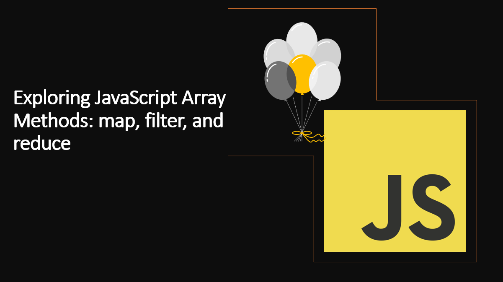

Introduction
JavaScript arrays come with a powerful set of built-in methods that make working with arrays more efficient and expressive. Among these methods, map() , filter() , and reduce() are the most commonly used ones.
In this article, we will explore these methods in detail and learn how to use them to solve real-world problems.
Understanding map(), filter(), and reduce() will equip you with powerful tools to transform, filter, and aggregate data in arrays like a pro.
Suggested Tutorials 📑:
Let's get started!
1. The map() Method
The map() method applies a provided function to each element in an array and returns a new array with the results. It allows you to transform the elements of an array without modifying the original array.
Here is the syntax of the map() method:
const new_array = arr.map(function callback(element, index, array) {
}[, thisArg])
Where:
arr is the array to be mapped.callback is the function that is called for every element of arr. Each time callback executes, the returned value is added to new_array.thisArg is an optional argument that will be used as this inside callback function.
As an example:
const numbers = [1, 2, 3, 4, 5];
const doubledNumbers = numbers.map((number) => number * 2);
console.log(doubledNumbers);
In the above example:
- The
map() method is called on the numbers array. - The
map() method accepts a callback function as an argument. The callback function is invoked for each element in the array. - The callback function returns the doubled value of each element.
- The
map() method returns a new array with the results.
Let's take another example:
const names = ["John", "Jacob", "Julia", "Jasmine"];
const nameLengths = names.map((name) => name.length);
console.log(nameLengths);
In the above example:
- The
map() method is called on the names array. - The
map() method accepts a callback function as an argument. The callback function is invoked for each element in the array. - The callback function returns the length of each element.
- The
map() method returns a new array with the results.
The map() method does not modify the original array.
2. The filter() Method
The filter() method creates a new array containing elements from the original array that pass a specified condition defined by a callback function. It is ideal for selecting elements that meet specific criteria.
Here is the syntax of the filter() method:
const new_array = arr.filter(function callback(element, index, array) {
}[, thisArg])
Where:
arr is the array to be filtered.callback is the function that is called for every element of arr. Each time callback executes, the returned value is added to new_array if the returned value is true.thisArg is an optional argument that will be used as this inside callback function.
As an example:
const numbers = [1, 2, 3, 4, 5];
const evenNumbers = numbers.filter((number) => number % 2 === 0);
console.log(evenNumbers);
In the above example:
- The
filter() method is called on the numbers array. - The
filter() method accepts a callback function as an argument. The callback function is invoked for each element in the array. - The callback function returns
true if the element is even, otherwise false. - The
filter() method returns a new array with the results.
Let's take another example:
const names = ["John", "Jacob", "Julia", "Jasmine"];
const namesWithJ = names.filter((name) => name.startsWith("J"));
console.log(namesWithJ);
In the above example:
- The
filter() method is called on the names array. - The
filter() method accepts a callback function as an argument. The callback function is invoked for each element in the array. - The callback function returns
true if the element starts with the letter J, otherwise false.
The filter() method does not modify the original array.
Suggested Tutorials 📑:
3. The reduce() Method
The reduce() method iterates over the array, accumulating the elements' values into a single value. It is perfect for aggregating data or performing calculations on the elements of an array.
Here is the syntax of the reduce() method:
const value = arr.reduce(function callback(accumulator, element, index, array) {
}[, initialValue])
Where:
arr is the array to be reduced.callback is the function that is called for every element of arr. Each time callback executes, the returned value is assigned to accumulator. The accumulator is the accumulated value previously returned in the last invocation of the callback, or initialValue, if supplied.initialValue is an optional argument that is used as the initial value of the accumulator. If not specified, the first element of the array is used as the initial value of the accumulator and callback is not invoked for that element.
As an example:
const numbers = [1, 2, 3, 4, 5];
const sum = numbers.reduce((accumulator, number) => accumulator + number, 0);
console.log(sum);
In the above example:
- The
reduce() method is called on the numbers array. - The
reduce() method accepts a callback function as an argument. The callback function is invoked for each element in the array. - The callback function returns the sum of the accumulator and the current element.
- The
reduce() method returns the final value of the accumulator.
Let's take another example:
const numbers = [1, 2, 3, 4, 5];
const product = numbers.reduce((accumulator, number) => accumulator * number, 1);
console.log(product);
In the above example:
- The
reduce() method is called on the numbers array. - The
reduce() method accepts a callback function as an argument. The callback function is invoked for each element in the array. - The callback function returns the product of the accumulator and the current element.
- The
reduce() method returns the final value of the accumulator.
The reduce() method does not modify the original array.
4. Chaining map(), filter(), and reduce()
One of the most powerful aspects of these array methods is their ability to be chained together, enabling complex data transformations in a concise manner.
As an example:
const numbers = [1, 2, 3, 4, 5];
const squaredEvenSum = numbers
.filter((num) => num % 2 === 0)
.map((num) => num * num)
.reduce((accumulator, current) => accumulator + current, 0);
console.log(squaredEvenSum);
Suggested Tutorials 📑:
5. Working with Objects in Arrays
These array methods are not limited to working with simple values. They can also be used with arrays of objects to manipulate complex data structures effectively.
As an example:
const users = [
{ name: 'Alice', age: 25 },
{ name: 'Bob', age: 30 },
{ name: 'Eve', age: 22 },
];
const names = users.map((user) => user.name);
console.log(names);
const adults = users.filter((user) => user.age >= 25);
console.log(adults);
const totalAge = users.reduce((total, user) => total + user.age, 0);
console.log(totalAge);
Conclusion
In this article, we have learned about the map(), filter(), and reduce() methods and how they can be used to manipulate arrays in JavaScript. We have also learned how to chain these methods together to perform complex data transformations in a concise manner.
Suggested Tutorials 📑:
I hope you found this article useful.
Happy Coding! 🚀